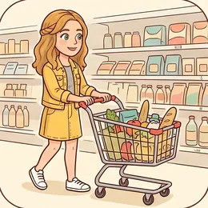
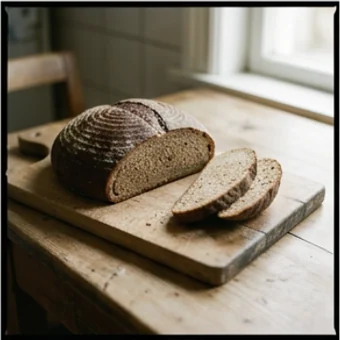

deutschoderwas · Sprechclub · Woche 1 · Strang A · Teil 2 · Mittwoch, 16. September
Etwas ist alle — und jetzt?
„Tut mir leid, das haben wir nicht mehr.“ Genau hier hört das Lehrbuch auf — und heute fängt es an.
Dein Niveau
Gleiches Thema, andere Sätze. Wechsle jederzeit — probier ruhig beides.
„Das haben wir leider nicht mehr.“
Schaut euch das Bild an. Das Regal ist leer, du brauchst es aber heute. Was fragst du als Nächstes?

Was machst du, wenn etwas ausverkauft ist — anderes nehmen oder woanders hingehen?
Hast du schon einmal jemanden im Laden nach etwas gefragt?
Was ist schwerer: fragen oder ohne das Ding nach Hause gehen?
Wie hartnäckig darf man im Laden nachfragen, bevor es unangenehm wird?
Wann lohnt sich eine Alternative, wann nicht?
Was erwartest du von gutem Service — und bekommst du das hier?
🗣️ Sprecht reihum: „Zuletzt war ausverkauft: …“ · „Dann habe ich stattdessen …“ · „Gefragt habe ich (nicht), weil …“
Kurz zurück: Montag in zwei Minuten
Falls du Teil 1 verpasst hast — das hier reicht, um heute mitzukommen. Sagt die Chips einmal laut in die Runde.
Ich hätte gern …zweihundert Grammein Kilodrei Stückeinen LiterWas kostet das?Wo finde ich …?Das ist alles.im Angebotder Kassenbon
Die Menge steht vorn, die Ware ohne Artikel dahinter
So ging der SatzIch hätte gern zwei Kilo Tomaten.
Und nur der männliche Artikel ändert sich
Der eine StolpersteinIch nehme den Käse und einen Kaffee.
Sag drei Dinge, die du gestern gekauft hast — jedes mit einer Menge.
Was sagst du auf „Sonst noch etwas?“, wenn du fertig bist?
Und was sagst du, wenn du den Namen nicht kennst?
🔁 Zu zweit, dreißig Sekunden: Einer sagt nur „Bitte schön?“, der andere bestellt drei Sachen mit Menge. Aufwärmen, mehr nicht.
Zwölf Wörter für den Fall, dass es fehlt
Sagt jedes Wort laut — und gleich den Beispielsatz hinterher. Erst dann bleibt es hängen.
🚫
ausverkauft
„Die frischen Brötchen sind schon ausverkauft.“
💡 Für einen ganzen Artikel. Für den Moment sagt man auch: Das ist gerade aus.
📦
nachbestellen
„Können Sie das nachbestellen?“
💡 Trennbar. Der Laden bestellt beim Hersteller — dazu gehört immer die Frage: Bis wann?
der Ersatz
„Als Ersatz nehme ich das Vollkornbrot.“
💡 Kein Plural. Das Verb dazu: etwas ersetzen — und im Laden fragt man: Was können Sie mir stattdessen empfehlen?
das Lager
„Schauen Sie bitte einmal im Lager nach?“
💡 Der Raum hinter dem Laden. Die feste Frage lautet: Haben Sie noch welche im Lager?
die Lieferung
„Die nächste Lieferung kommt am Donnerstag.“
💡 liefern, geliefert werden. Im Laden fragt man: Wann kommt die nächste Lieferung?
🔎
nachschauen
„Ich schaue kurz nach, einen Moment bitte.“
💡 Trennbar. Auch nachsehen. Das ist der Satz, den du hören willst — er bedeutet: Es gibt noch Hoffnung.

stattdessen
„Stattdessen nehme ich das dunkle Brot.“
💡 Steht gern auf Position 1 — dann kommt sofort das Verb: Stattdessen nehme ich …
🤷
leider
„Leider haben wir das gerade nicht da.“
💡 Das Wort, mit dem jede Absage im Laden anfängt. Hörst du es, kommt gleich eine Alternative — frag danach.
die Packungsgröße
„Gibt es das auch in einer kleineren Packungsgröße?“
💡 Zusammengesetzt aus die Packung + die Größe. Der Artikel richtet sich immer nach dem letzten Wort.
umtauschen
„Kann ich das noch umtauschen?“
💡 Trennbar. Dafür brauchst du den Kassenbon — und meistens hast du vierzehn Tage Zeit.
der Bon
„Haben Sie den Bon noch?“
💡 Kurzform von Kassenbon. Ohne ihn wird ein Umtausch schwierig — nicht unmöglich, aber schwierig.
🙏
zurücklegen
„Könnten Sie mir eins zurücklegen?“
💡 Trennbar. Der Laden hebt es für dich auf. In kleinen Läden geht das fast immer — man muss nur fragen.
💡 Spiel: Verdeckt die Wörter. Wer eine Karte trifft, baut damit eine Frage an die Verkäuferin — keine Aussage.
Es ist alle. Drei Wege nach vorn
Erst die drei Möglichkeiten, die du immer hast. Darunter drei Sätze richtig und falsch nebeneinander.
🔎
Nachfragen
Vielleicht ist noch welches hinten.
Haben Sie vielleicht noch welche im Lager?
🔄
Ersatz nehmen
Etwas Ähnliches tut es auch.
Was können Sie mir stattdessen empfehlen?
📅
Später wiederkommen
Wann kommt Nachschub?
Wann kommt die nächste Lieferung?
✅ So fragt man
Haben Sie vielleicht noch welche im Lager?
Warum das wirktvielleicht macht aus einer Forderung eine Bitte — und welche ersetzt das Wort, das du schon genannt hast.
❌ So nicht
Sie müssen noch welche haben.
Das ProblemWer im Laden „müssen“ sagt, bekommt selten Hilfe. Die Verkäuferin kann nichts dafür.
✅ So fragt man
Was können Sie mir stattdessen empfehlen?
Warum das wirktDu machst die andere Person zur Fachfrau. Fast jede antwortet dann gern und ausführlich.
❌ So nicht
Dann eben nichts.
Das ProblemVerständlich, aber du gehst mit leeren Händen. Eine Frage kostet fünf Sekunden.
✅ So fragt man
Könnten Sie mir eins zurücklegen?
Warum das wirktKönnten Sie …? ist die höflichste Bitte im Deutschen. In kleinen Läden klappt das fast immer.
❌ So nicht
Legen Sie mir eins zurück.
Das ProblemGrammatisch richtig, im Ton falsch. Der Imperativ klingt hier wie ein Befehl.
Egal, was fehlt — eine davon passt:
„Haben Sie vielleicht noch welche im Lager?“
„Wann kommt die nächste Lieferung?“
„Was können Sie mir stattdessen empfehlen?“
„Könnten Sie mir eins zurücklegen?“
Merk dir die Reihenfolge: hinten schauen → wann wieder → was sonst → aufheben. Vier Fragen, und du gehst nicht mit leeren Händen.
⚖️ Kurzübung: Einer nennt etwas, das ausverkauft ist. Der Nächste stellt eine der vier Fragen. Reihum, bis alle vier durch sind.
Die vier Sätze für den leeren Platz
Verstehen, nachfragen, Ersatz suchen, entscheiden. In dieser Reihenfolge kommst du aus jedem leeren Regal wieder heraus.
1 · 👂 Verstehen Ach, schade.Gar nichts mehr?Auch nicht in klein?
So klingt esAch, schade — haben Sie gar nichts mehr davon?
2 · 🔎 Nachfragen Haben Sie noch welche im Lager?Können Sie nachschauen?Wann kommt die Lieferung?
So klingt esKönnen Sie bittekurz im Lager nachschauen?
3 · 🔄 Ersatz suchen Was ist ähnlich?Was empfehlen Sie?Dann nehme ich …
So klingt esWasempfehlen Sie mir stattdessen?
4 · ✅ Entscheiden Gut, das nehme ich.Dann komme ich morgen wieder.Danke für Ihre Hilfe!
So klingt esGut, dann komme ich am Donnerstag wieder — vielen Dank!
1 · 👂 Nachhaken Ist das dauerhaft aus dem Sortiment?Kommt das überhaupt wieder?War das nur heute so?
So klingt esIstdasdauerhaft aus dem Sortiment, oder nur heute?
2 · 🔎 Genauer fragen Könnten Sie im System nachsehen?Führt eine andere Filiale das noch?Lässt sich das bestellen?
So klingt esKönnten Sie bitte im System nachsehen, ob eine andere Filiale es noch hat?
3 · 🔄 Ersatz abwägen Was ist der Unterschied zu …?Ist das vergleichbar?Kommt das dem nahe?
So klingt esWasist der Unterschied zwischen den beiden?
4 · ✅ Verbindlich abschließen Könnten Sie mir eins zurücklegen?Auf welchen Namen?Bis wann muss ich es abholen?
So klingt esKönnten Sie mir eins zurücklegen — bis wann muss ich es abholen?
Verb das, was fehlt Menge und Zeit Höflichkeit
🗣️ Sofort anwenden: Jeder spielt den leeren Platz einmal durch — verstehen, nachfragen, Ersatz, entscheiden. Vier Sätze, kein Zögern.
Vier Mal „ist alle“ — zwei Runden
Runde 1: Lest den Dialog zu zweit laut. Runde 2: Auf den Knopf tippen — B verschwindet, und ihr antwortet selbst. Die Regieanweisung bleibt als Hilfe stehen.
Dialog 1 · „Keine Brötchen mehr“
Samstag, halb zwölf. Du wolltest sechs Brötchen — der Korb ist leer.
A
Brötchen habe ich leider keine mehr, die sind seit elf aus.
B
Ach, schade. Backen Sie heute noch mal nach?
🗣️ Zeig kurz die Enttäuschung und stell sofort eine Frage.tippen = Hilfe zeigen
A
Nein, samstags backen wir nur bis zehn.
B
Verstehe. Was können Sie mir stattdessen empfehlen?
🗣️ Nimm die Absage an und frag nach einer Empfehlung.tippen = Hilfe zeigen
A
Die Laugenstangen sind noch ganz frisch.
B
Dann nehme ich vier davon. Und morgen — ab wann haben Sie Brötchen?
🗣️ Entscheide dich und frag gleich für das nächste Mal.tippen = Hilfe zeigen
A
Ab sieben, dann ist alles da.
B
Gut zu wissen, danke!
🗣️ Kurz bedanken, fertig.tippen = Hilfe zeigen
Dialog 2 · „Das Regal ist leer“
Du brauchst genau diese eine Sorte Nudeln. Das Fach ist leer.
B
Entschuldigung, die Vollkornnudeln sind aus. Haben Sie vielleicht noch welche im Lager?
🗣️ Sag, was fehlt, und frag nach dem Lager. Mit „vielleicht“ klingt es wie eine Bitte.tippen = Hilfe zeigen
A
Moment, ich schaue kurz nach.
B
Das wäre nett, danke.
🗣️ Bedanke dich, während du wartest.tippen = Hilfe zeigen
A
Tut mir leid, hinten ist auch nichts mehr.
B
Schade. Wann kommt denn die nächste Lieferung?
🗣️ Frag nach dem Termin — mit „denn“ klingt es freundlich.tippen = Hilfe zeigen
A
Donnerstag früh, so gegen sieben.
B
Dann komme ich Donnerstag wieder. Könnten Sie mir zwei Packungen zurücklegen?
🗣️ Nenn deinen Plan und bitte um das Zurücklegen.tippen = Hilfe zeigen
A
Klar, auf welchen Namen?
Dialog 3 · „Nur noch in Groß“
Es gibt die Sorte — aber nur in der Fünf-Kilo-Packung.
A
Das haben wir nur noch im Großgebinde, fünf Kilo.
B
Das ist mir zu viel. Gibt es das auch in einer kleineren Packungsgröße?
🗣️ Sag ehrlich, dass es zu viel ist, und frag nach einer kleineren Größe.tippen = Hilfe zeigen
A
Momentan nicht. Nächste Woche kommt die Kleinpackung wieder.
B
Und ist das genau dasselbe, nur kleiner?
🗣️ Vergewissere dich, bevor du wartest.tippen = Hilfe zeigen
A
Ganz genau dasselbe, ja.
B
Dann warte ich lieber. Für heute nehme ich das hier als Ersatz.
🗣️ Entscheide für beides: heute und nächste Woche.tippen = Hilfe zeigen
A
Gute Wahl, das ist sehr ähnlich.
Dialog 4 · „Falsch gegriffen“
Zu Hause merkst du: Es ist die laktosefreie Milch, du wolltest die normale.
B
Guten Tag. Ich habe gestern hier eingekauft und die falsche Milch erwischt. Kann ich die noch umtauschen?
🗣️ Sag den Grund und stell die Frage. Beides in zwei Sätzen.tippen = Hilfe zeigen
A
Haben Sie den Bon noch?
B
Ja, hier ist er. Die Packung ist ungeöffnet.
🗣️ Zeig den Bon und sag gleich, dass nichts geöffnet wurde.tippen = Hilfe zeigen
A
Dann ist das kein Problem. Möchten Sie eine andere oder das Geld zurück?
B
Eine andere, bitte — die normale Vollmilch.
🗣️ Entscheide dich und sag genau, was du willst.tippen = Hilfe zeigen
A
Die steht ganz hinten links. Holen Sie sie sich einfach.
B
Super, vielen Dank für die unkomplizierte Hilfe!
🗣️ Ein Dank am Ende gehört dazu — besonders, wenn es leicht ging.tippen = Hilfe zeigen
🎭 Und jetzt ihr: Spielt Dialog 2 noch einmal — aber die Verkäuferin hat wenig Zeit und antwortet sehr kurz. B muss trotzdem alle vier Fragen unterbringen.
🧩 Kein, nicht und welche
Wenn etwas fehlt, braucht man drei kleine Wörter: die Verneinung, die richtige Verneinung — und das Wort, das ein Nomen ersetzt.
kein steht vor einem Nomen: Ich habe keine Brötchen.nicht verneint alles andere: Das ist nicht frisch. Und wenn du das Nomen schon gesagt hast, ersetzt du es durch welche: Haben Sie noch welche? Damit musst du das lange Wort nicht zweimal sagen.
🚫kein + NomenWir haben keine Brötchen mehr.
▾
❌nicht + RestDas Brot ist nicht frisch.
▾
🔁welche statt NomenHaben Sie noch welche?
▾
✳️eins / eine / einenKönnten Sie mir eins zurücklegen?
VerbHaben
SubjektSie
Ersatzwortnoch welche
Ortim Lager?
kein oder nicht? Eine einzige Frage
Steht direkt danach ein Nomen? Dann kein. Sonst nicht. Mehr ist es nicht.
🍞
kein + Nomen
Vor Dingen und Personen
Wir haben heute kein Brot.
🌡️
nicht + Adjektiv/Verb
Vor allem anderen
Das ist nicht frisch. · Ich komme nicht.
🔁
welche
Ersetzt ein Nomen im Plural
Brötchen? Haben Sie noch welche?
kein Brot · keine Milch · keine Eiernicht frisch · nicht teuer · nicht hierHaben Sie welche? (Plural)Haben Sie eins / eine / einen? (Singular)gar nichts mehr
Die Falle: kein Nomen, kein kein
Der häufigste Fehler beim Verneinen — und er fällt sofort auf.
✅ Richtig
Wir haben keine Brötchen mehr.
WarumDirekt danach steht ein Nomen (Brötchen) — also kein.
❌ Falsch
Wir haben nicht Brötchen mehr.
MerkenVor einem Nomen steht nie nicht. Das ist der Klassiker.
✅ Richtig
Das Brot ist nicht frisch.
WarumDanach steht ein Adjektiv — also nicht.
❌ Falsch
Das Brot ist kein frisch.
Merkenkein braucht immer ein Nomen hinter sich. Ein Adjektiv reicht nicht.
✅ Richtig
Brötchen? Haben Sie noch welche?
WarumDas Nomen wurde schon genannt — welche ersetzt es im Plural.
❌ Falsch
Brötchen? Haben Sie noch Brötchen Brötchen?
MerkenZweimal dasselbe Wort klingt sofort fremd. Deutsche ersetzen es durch welche.
🧱 Bau die Sätze selbst
Tippe die Teile in der richtigen Reihenfolge an. Danach auf „prüfen“.
📖 Und jetzt im Zusammenhang
Ein Einkauf, bei dem fast nichts da ist. Wähle in jeder Lücke das passende Wort.
Schau auf das Wort direkt hinter der Verneinung:
Kommt ein Nomen? → kein / keine / keinen
Kommt ein Adjektiv oder gehört es zum Verb? → nicht
Ist das Nomen schon gesagt? → welche (Plural) oder eins / eine / einen (Singular)
Merksatz für den Laden: Wir haben keine mehr — haben Sie noch welche? Beide Formen in einem Atemzug.
🎭 Drei leere Regale
Zu zweit. Einer verkauft und hat es nicht, einer will es trotzdem. Zwei Minuten pro Runde, dann tauschen.
1 · Der Kuchen für den Geburtstag
A braucht heute Nachmittag eine Torte. B hat keine mehr und backt heute nicht nach.
Ach, schadeHaben Sie etwas Ähnliches?Wann kommt wieder etwas?Dann nehme ich das
Ist das dauerhaft aus dem Sortiment?Könnten Sie im System nachsehen?Führt eine andere Filiale das?Könnten Sie mir eine zurücklegen?
✅ Eine gute Runde enthältA geht nicht mit leeren Händen: Es gibt entweder einen Ersatz, einen Termin oder eine zurückgelegte Torte.
2 · Nur noch die große Packung
A wohnt allein und braucht eine kleine Menge. B hat nur fünf Kilo.
Das ist mir zu vielGibt es das kleiner?Was kostet die große?Dann warte ich
Lässt sich das abwiegen?Wann kommt die Kleinpackung?Ist das genau dasselbe?Dann nehme ich heute den Ersatz
✅ Eine gute Runde enthältA entscheidet für heute und für nächste Woche — und fragt nach, ob das Ersatzprodukt wirklich dasselbe ist.
3 · Falsch gegriffen
A hat gestern das Falsche gekauft und will umtauschen. B fragt nach dem Bon.
Ich habe das Falsche gekauftHier ist der BonEs ist ungeöffnetIch möchte eine andere
Mir ist zu Hause aufgefallen, dass …Die Packung ist unversehrtIch hätte lieber einen Umtausch als das GeldWo finde ich die richtige?
✅ Eine gute Runde enthältA sagt zuerst, was passiert ist, legt den Bon vor und entscheidet sich klar zwischen Umtausch und Geld zurück.
🎴 Sprechkarten
Zieh eine Karte und sprich mindestens vier Sätze am Stück.
Deine Aufgabe
Tippe auf den Knopf.
⏱️ Die 90-Sekunden-Challenge
Ein Wort, anderthalb Minuten, freies Sprechen. Es muss nicht perfekt sein — es muss weitergehen.
Dein Wort
ausverkauft
1:30
Erzähl es der Reihe nach, dann trägt sich die Zeit von selbst:
1. Was wolltest du kaufen, und wofür?
2. Warum ging es nicht — ausverkauft, zu groß, falsch gegriffen?
3. Was hast du gefragt?
4. Womit bist du nach Hause gegangen?
Und wenn ein Wort fehlt: beschreib es. „So ein Raum hinter dem Laden“ ist besser als eine Pause.
⏱️ Spielregel: In jeder Runde muss eine Frage an die Verkäuferin vorkommen. Die Gruppe hört mit und sagt hinterher, welche es war.
✅ Sitzt es schon?
8 Fragen. Tippe auf deine Antwort — die Erklärung kommt sofort.
✍️ Lückentext
Wähle in jeder Lücke das passende Wort.
📣 Danach laut: Lest die vier Fragen noch einmal am Stück vor — Lager, Lieferung, Ersatz, zurücklegen. Erst wenn es flüssig klingt, sitzt es.
📮 Deine Hausaufgabe bis nächste Woche
Vier kleine Aufgaben, zusammen etwa 25 Minuten. Tippe eine an, wenn du sie geschafft hast.
💡 Warum das hilft: Bestellen kann man auswendig lernen. Nachfragen nicht — dafür muss man die Sätze einmal selbst gesagt haben.
0 von 0 Aufgaben geschafft.
So sieht der Unterschied aus:
„Ich habe keine Milch mehr.“ (Nomen dahinter)
„Ich habe kein Brot gekauft.“ (Nomen dahinter)
„Die Milch ist nicht frisch.“ (Adjektiv dahinter)
„Ich gehe heute nicht einkaufen.“ (gehört zum Verb)
„Das ist nicht mein Bon.“ (vor einem Possessivwort steht nicht)
Ein einziger Test: Kommt ein Nomen? → kein. Sonst → nicht.
So könnte dein Dialog verlaufen:
„Guten Tag, ich suche die Vollkornnudeln — das Fach ist leer.“
„Die sind leider aus.“ — „Haben Sie vielleicht noch welche im Lager?“
„Ich schaue nach … nein, tut mir leid.“ — „Wann kommt die nächste Lieferung?“
„Donnerstag früh.“ — „Könnten Sie mir dann zwei Packungen zurücklegen?“
„Klar, auf welchen Namen?“ — „Demir. Und für heute: Was empfehlen Sie mir stattdessen?“
Vier Fragen, vier Chancen. Nach der letzten hast du entweder das Produkt, einen Termin oder einen Ersatz.
📬 Abgabe: Schick deine Sprachnachricht bis Sonntag 18 Uhr in die Gruppe. Wir hören zwei davon gemeinsam an — freiwillig, versteht sich.
🔜 Nächste Woche:Einen Termin machen und absagen — anrufen, eine Zeit vorschlagen und am Mittwoch: verschieben, ohne dass jemand sauer wird.